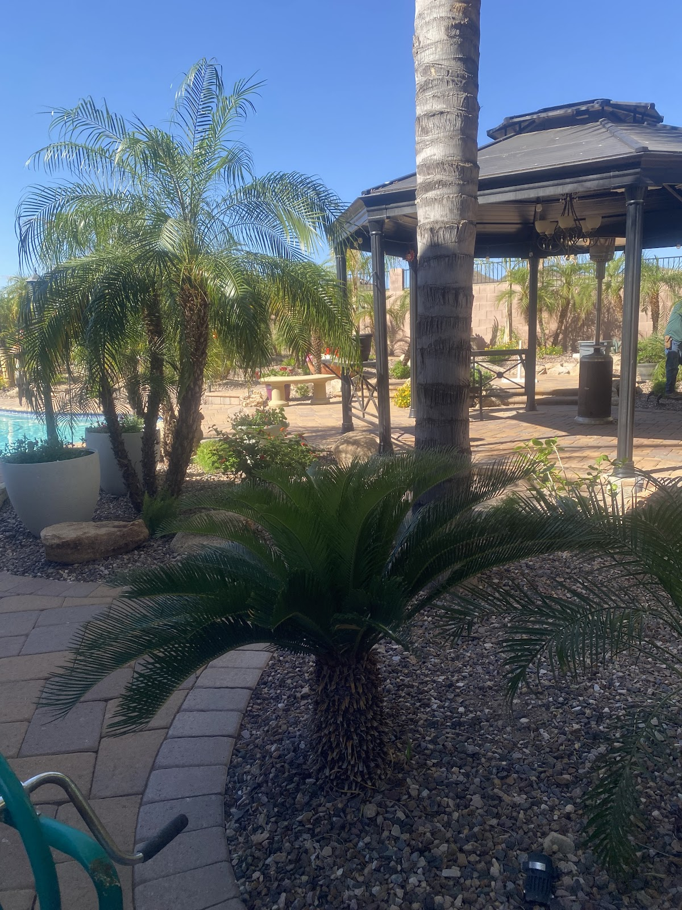

Phoenix landscaping that still looks good in July.
We redo tired front yards in Alhambra, Maryvale, and Encanto — rock, plants, and lawn that can handle a Phoenix summer. Call (602) 421-1175.
We redo tired front yards in Alhambra, Maryvale, and Encanto — rock, plants, and lawn that can handle a Phoenix summer. Call (602) 421-1175.

Lawn where you walk. Rock everywhere else.
Full front-yard and backyard redesigns: decomposed granite, desert plants, and clean lawn edges.

New lawn where you need it, with a proper base and edges, so it doesn’t brown out by July.

Patios and walkways set on a thick base so they stay level when the ground shifts.


Walkthrough and price
We come to the house, look at the yard with you, and give you a price before any work starts.
Install
We put in the rock, plants, lawn, and pavers. Debris leaves with us.
Irrigation
We set the sprinkler schedule and walk you through the zones so new plants make it through the first summer.
Rated 5.0 on Google by neighbors in Alhambra, Maryvale, and Encanto. Read the reviews.
Yes. Send the packet and we will match rock color and the approved plant list before we order anything.
Sometimes overseeding is enough. If the soil is gone, replacing the lawn is cheaper than another season of seed that fails in May.
Call (602) 421-1175. West Phoenix jobs can often start within the week if the calendar is open.
Yes. We take green waste and leftover rock with us.
We plant for Phoenix heat. If a species won’t live through June here, we will suggest something that will.
The street address, a photo from the curb, and whether you want the front, the back, or both.
Leave your address and what you want done. We’ll call you back.